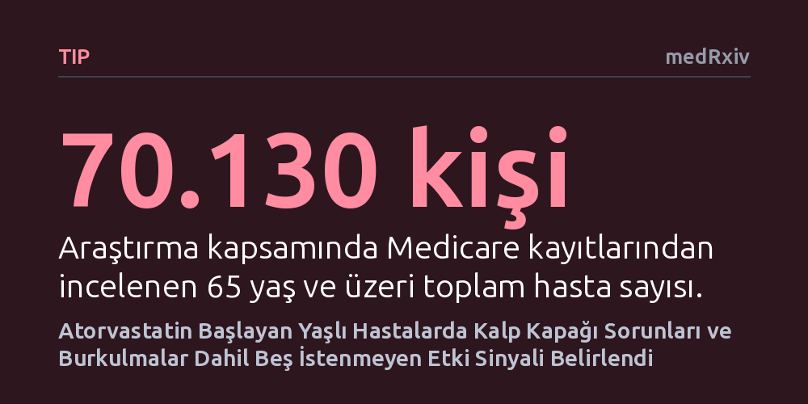

TIP · medRxiv · 2026-10-14
Araştırmacılar, kalp krizi veya inme sonrası atorvastatin başlanan 65 yaş üstü 70 binden fazla hastada ilacın istenmeyen etkilerini klinik deneme benzetimiyle taradı. İnceleme sonucunda kalp kapağı bozuklukları, burkulmalar ve prediyabet dahil beş olası yan etki sinyali belirlendi.
Geleneksel yan etki bildirimlerini beklemek yerine büyük sigorta verilerini klinik deneme mantığıyla incelemenin, yaşlılarda gözden kaçan ilaç risklerini erkenden yakalayabileceğini gösteriyor.

Yeni bir ilaç piyasaya çıkmadan önce yapılan klinik deneyler, genellikle genç ve tek bir hastalığı bulunan seçilmiş katılımcılarla yürütülür. Oysa 65 yaşın üzerindeki bireyler çoğunlukla birden fazla kronik hastalıkla mücadele eder, aynı anda çok sayıda farklı ilaç kullanır ve yaşlanmaya bağlı fizyolojik değişimler nedeniyle ilaçları gençlerden farklı metabolize eder. Bu kırılgan grup, klinik çalışmalarda yeterince temsil edilmediği için ilaçların gerçek yaşamdaki olası yan etkileri piyasa öncesinde tam olarak anlaşılamaz.
Mevcut ilaç güvenliği izleme mekanizmaları ise büyük ölçüde pasif bildirim sistemlerine dayanmaktadır. Bu sistemlerde bir hekimin ya da hastanın şüpheli bir olumsuz etkiyi fark edip resmi kurumlara bildirmesi beklenir. Ancak bildirim oranlarının düşüklüğü ve ilacı toplamda kaç kişinin kullandığının net olarak bilinmemesi, gerçek risk oranlarının hesaplanmasını engeller. Dünyada kolesterol düşürücü olarak en sık reçete edilen ilaçlardan biri olan atorvastatin gibi yaygın tedavilerde, yaşlı nüfustaki olası risklerin erkenden ve sistematik biçimde taranması bu nedenle kritik bir gereksinimdir.
Araştırmacılar, pasif bildirimlerin yarattığı boşluğu doldurmak amacıyla ABD'deki Medicare sağlık sigortası veri tabanında yer alan 2017-2019 yıllarına ait fatura kayıtlarını mercek altına aldı. Çalışmaya, daha önce hiç statin grubu ilaç kullanmamış ve yakın zamanda kalp krizi ya da inme nedeniyle hastaneye yatırılmış 65 yaş ve üzeri 70.130 hasta dahil edildi. Hastaneden taburcu olduktan sonraki iki hafta içinde atorvastatin başlanan 39.948 hasta ile farklı bir yeni ilaca başlayan 19.182 hasta belirlendi.
Çalışmanın yöntemsel omurgasını 'hedef deneme benzetimi' oluşturdu. Bu yaklaşım, etik ya da pratik engeller nedeniyle fiilen gerçekleştirilemeyen ideal bir klinik denemenin adımlarını geriye dönük gözlemsel verilerle titizlikle canlandırmayı hedefler. Hastaların yaş, cinsiyet ve mevcut kronik hastalıkları gibi başlangıç özellikleri istatistiksel ağırlıklandırma yöntemleriyle dengelenerek gruplar birbirine eşitlendi. Böylece takip eden 6 ay boyunca hastaların sağlık kayıtları taranarak 295 farklı klinik sonuç olası istenmeyen etkiler açısından incelendi.
İstatistiksel analizler ve çoklu test düzeltmeleri sonucunda, atorvastatin kullanan grupta karşılaştırma grubuna göre riski belirgin biçimde yüksek çıkan beş birincil olumsuz etki sinyali yakalandı. En dikkat çekici bulgular arasında, ilacı alanlarda burkulma ve incinme riskinin yüzde 79, kalp kapağı bozuklukları riskinin ise yüzde 71 oranında daha yüksek çıkması yer aldı. Ayrıca, statinlerin kan şekeri metabolizması üzerindeki bilinen etkileriyle uyumlu biçimde, şeker hastalığı öncüsü olan prediyabet tanısında da yüzde 71'lik bir risk artışı tespit edildi.
Belirlenen diğer iki sinyali ise genel duyu ve algı bozuklukları (yüzde 23 artış) ile belirli bir teşhis konulamayan anormal klinik bulgular (yüzde 55 artış) oluşturdu. Yapılan ek duyarlılık analizlerinde ise beyin kanaması, kanama sonrası anemi ve varis gibi dolaşım sistemiyle bağlantılı bazı ek sinyaller de gözlendi. Ancak araştırmacılar, bu istatistiksel sinyallerin doğrudan bir neden-sonuç kanıtı olmadığını, ileri araştırmalarla doğrulanması gereken öncelikli şüphe alanlarını işaret ettiğini belirtmektedir.
Elde edilen sonuçlar, sigorta faturaları gibi büyük sağlık verilerinin gelişmiş nedensel çıkarım yöntemleriyle harmanlandığında ilaç güvenliğinde proaktif bir erken uyarı sistemi olarak kullanılabileceğini kanıtlıyor. Pasif bildirimlerin yetersiz kaldığı yaşlı hasta gruplarında, bu tür dijital denetimler sayesinde henüz bilinmeyen potansiyel tehlikeler çok daha hızlı tespit edilebilir.
Bununla birlikte, ortaya çıkan sinyaller hastaların doktorlarına danışmadan ilaç kullanımını bırakmaları gerektiği anlamına kesinlikle gelmez. Kalp krizi veya inme geçirmiş hastalarda atorvastatin tedavisinin yeni bir damar tıkanıklığını ve ölümü engellemedeki faydası çok sayıda kesin klinik deneyle tartışmasız biçimde kanıtlanmıştır. Buradaki bulgular, hekimlerin özellikle yaşlı hastaları izlerken kas-iskelet ve metabolizma belirtilerine daha fazla dikkat etmeleri gerektiğini hatırlatan bilimsel bir rehber niteliğindedir.